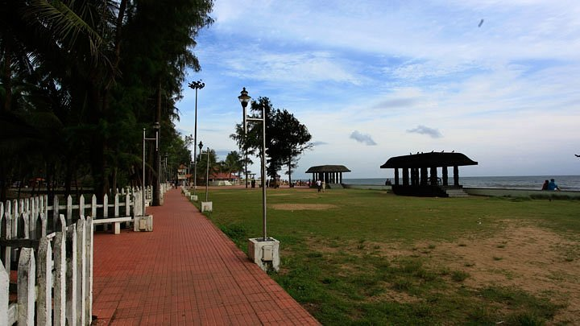

Thrissur is also known as the "Cultural Capital of Kerala" because of its cultural, spiritual and religious leanings throughout history. It contains the Kerala Sangeetha Nadaka Academy, Kerala Lalithakala Akademi and Kerala Sahitya Academy. The city hosts the Thrissur Pooram festival, the most colourful and spectacular temple festival in Kerala. The festival is held at the Thekkinkadu Maidan in April or May. Thrissur has a large number of well-known temples including the Vadakkumnathan temple, Thiruvambadi Sri Krishna Temple and Paramekkavu temple, and the Guruvayur temple as well as two famous churches, the Our Lady of Lourdes Syro-Malabar Catholic Metropolitan Cathedral and the Our Lady of Dolours Syro-Malabar Catholic Basilica.Apart from being the cultural nerve centre of Kerala, it is also a major academic hub and is home to several educational institutions including the Kerala Kalamandalam, Jawahar Bal Bhavan Thrissur, Kerala Police Academy, Kerala Agricultural University, Kerala University of Medical and Allied Sciences, College of Veterinary and Animal Sciences, Kerala Institute of Local Administration and Kerala Forest Research Institute.

Athirapilly Waterfalls
Athirapally Falls is a haven for flora and fauna alike. It is a popular picnic spot and the scenic beauty of the waterfall offers spectacular visuals for visitors.
Learn more

Snehatheeram Beach
The Snehatheeram Beach situated in Thrissur is one of the most super-scenic beaches present here, and a trip to Thrissur without coming down here is incomplete.
Learn more

Chimmini Dam
Chimmony Dam, popularly known as Chimmini Dam, is situated near a village named Echippara in Mukundapuram taluka of the Thrissur district.
Learn more
Thrissur Zoo
Formerly known as the Trichur Zoo, Thrissur Zoo and the State Museum is located in the heart of Thrissur city, Kerala.
Learn more
Athirapilly Waterfalls
Located 60 km from the Thrissur district of Kerala, Athirapally Falls is a marvellous cascade of frothy waters that makes its way from the Anamudi mountains of the Western Ghats. Also called as Bahubali Waterfall, this 80 ft high and 330 ft wide marvel is the largest waterfall in Kerala. It is often referred to as the "Niagara Falls of India". From here, the Athirapally falls flows through the verdant greenery of Vazhachal Forest toward the Arabian Sea, creating a spectacular vista of scintillating water, emerald jungles and azure sky.When you land in Athirapally, you are greeted with the sight of charming green Sholayar Peaks peering over the rushing gush of the falls. Standing against the backdrop of a rustling jungle foliage, this many films and music videos are shot here. Bird lovers cannot miss this place, for it is the only place in the Western Ghats where four endangered Hornbill species are seen. There is a pool above the falls where you can relax and unwind. To get a view of the waterfall, one needs to get down from the mountain for about 100 meters.
Snehatheeram Beach
The Snehatheeram Beach situated in Thrissur is one of the most super-scenic beaches present here, and a trip to Thrissur without coming down here is incomplete with the sun, sand and the Arabian Sea all coming together in perfect harmony and descending upon the beach right in the middle of the coastline. It is when one sets foot on its coast that they realize the reason the beach is known as Snehatheeram (meaning love shore). It is impossible for the person coming here to not fall in love with the music of the sea waves hitting the against the shore softly while watching the sun disappearing in water.
Situated at a distance of 3 kilometers from the Thalikulam Taluk of Thrissur and 30 kilometers from the town, it is a perfect setting for everyone who comes to spend time here. Kids can be seen playing in the sand and building sandcastles, couples come here to enjoy a refreshing romantic walk in the breezy atmosphere against the sea in the background, and families come here for a day of fun. The beauty of the beach attracts numerous national as well as international travelers from all over the world throughout the year. Many budding photographers also come here to capture the surreal beauty of the place. It is a place worth going to for offering yourself a break away from the busy and monotonous routine and look around at what beauty nature has to offer to us.
Chimmini Dam
The Chimmony Dam, popularly known as Chimmini Dam, is situated near a village named Echippara in Mukundapuram taluka of the Thrissur district. It is constructed across the River Chimoni which is a tributary of the Karuvannur River. The reservoir along with the Chimmony Wildlife Sanctuary is surrounded by hills of the Southern Western Ghats thereby making the area appear natural and scenic. The dam was started in 1984 but was made fully functional and dedicated to the nation in 1996. The dam is also a very famous tourist spot apart from providing the water for irrigation. People visit this region to enjoy a relaxing picnic since the place offers recreational activities including trekking and boating through the Chimmony Wildlife Sanctuary.
The Chimmony Reservoir, which is an artificial lake is created by the dam, is spread over an area of 10 square kilometres with a depth of 20 meters on an average. There are numerous rubber plantations in the valley which have now been replaced by the tropical rainforests of the region.
Thrissur Zoo
Started in the year 1885, the attraction covers an area of approximately 13.5 acres. The zoo houses a wide variety of animals, reptiles, and birds. Besides the extensive variety of fauna, the zoo has many other attractions to fascinate you. There is a Zoological Garden, Botanical Garden, a Natural History Museum and an Art Museum, showcasing the socio-cultural heritage of the region.
The Art Museum located in Thrissur Zoo has an exquisite collection of wood-carvings, metal sculptures, Kathakali figures, ancient jewellery and a wonderful collection of traditional Kerala lamps. It also has some historical items like swords, jewellery, rocks, stuffed butterflies, etc. Some of the animals found here are tigers, lions, deer, sloth bears, monkeys, hippopotamus, camels, pink flamingos, mithun of the north-eastern hills, and lion-tailed macaques.